Week 2 Excel PivotTable + Chart
Wednesday, September 4, 2024
I am using the airquality dataset, which is a collection of data collected from 153 observations based on 6 different variables. These variables include:
Ozone (Numeric) - Mean ozone in parts per billion from 1300 to 1500 hours at Roosevelt Island
Solar R (Numeric) - Solar radiation in Langleys in the frequency band 4000–7700 Angstroms from 0800 to 1200 hours at Central Park
Wind (Numeric) - Average wind speed in miles per hour at 0700 and 1000 hours at LaGuardia Airport
Temp (Numeric) - Maximum daily temperature in degrees Fahrenheit at La Guardia Airport
Month (Numeric) - Months from May to September
Day (Numeric) - Days of the months ranging from 1 to 31
I am using Excel to clean the data, which removes all the rows which have N/A values, and I did an exploration analysis.
Ozone vs Temperature Histogram
This histogram represents the amount of temperature values calculated within each border of values of ozone. For example, in the range of ozone level between 1 and 25, there were 49 temperature values recorded.
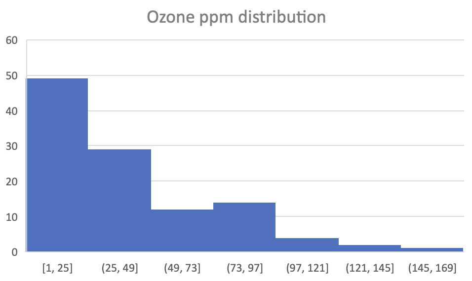
Ozone vs Temperature Scatter Plot
This scatter plot displays the correlation between the ozone levels and the temperature values recorded within these five months. As the ozone level increased, so did the temperature value, with one outlier.
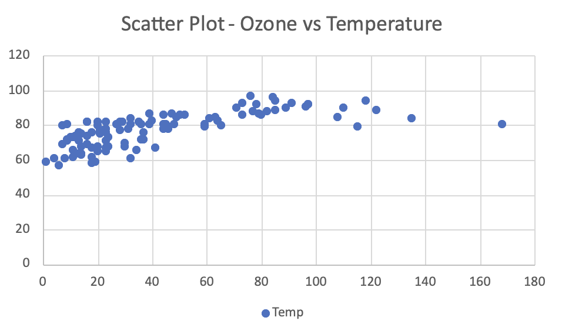
My First PivotTable
This PivotTable displays the average values of each variable for each of the five months.
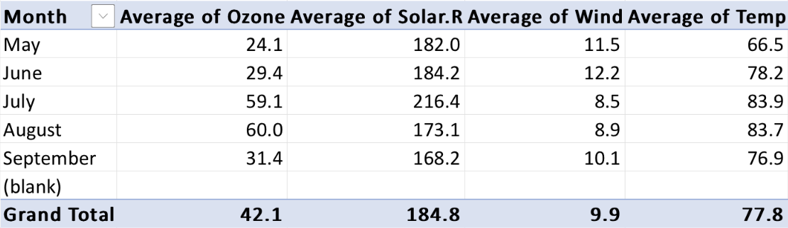
My Second PivotTable
This PivotTable displays the average temperature values for each day of each month.
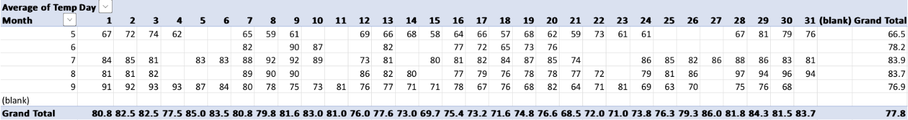
Friday, September 6, 2024
Using the same airquality datasets, I worked on creating PivotCharts from previous and new PivotTables comparing different values and variables.
PivotChart1 - Average Variable Values by ‘Month’
This pivot table produced this chart. These are the average values of each variables for each of the five months. The PivotChart shows the comparison between each of the variables and how each one increases or decreases throughout the five months.
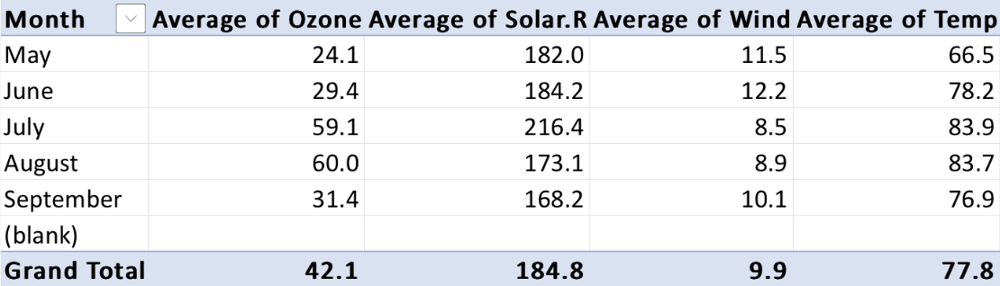
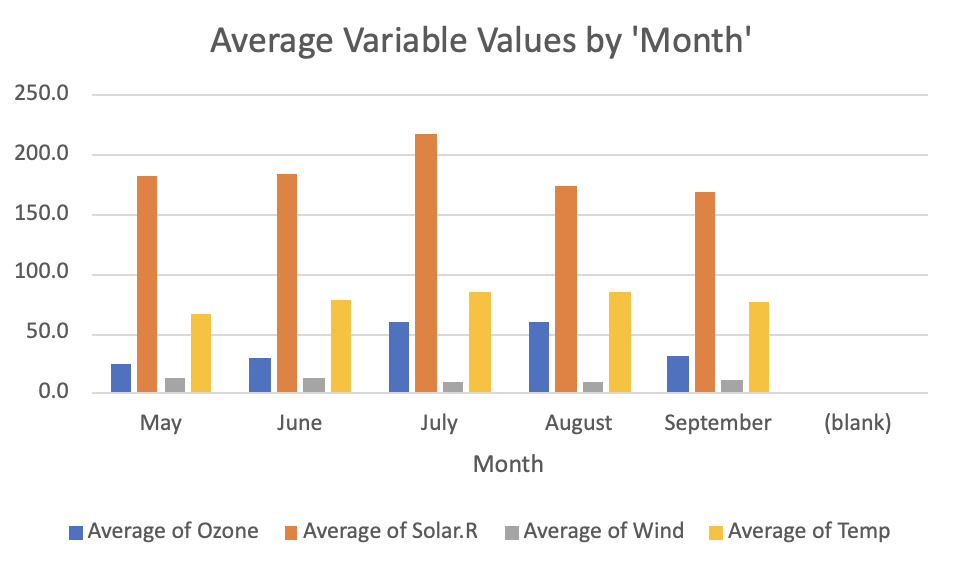
PivotChart2 - Average Ozone Values by ‘Temp’
This pivot table produced this chart. This PivotChart displays the average ozone values for each temperature value that was recorded. As the temperature values increase, the average values for the ozone can be seen to also increase in a correlated way.
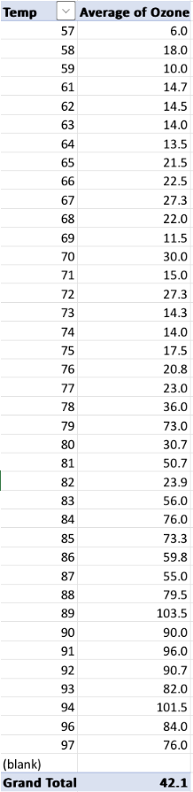
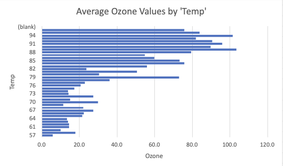
PivotChart3 - Average Temp and Ozone Values by ‘Wind’
This pivot table produced this chart. This PivotChart displays the average values of both temperature and ozone for each wind value recorded. From the chart, it is evident that as the wind values increase, the average values for temperature seem to slightly decrease and the average values for the ozone levels seem to greatly decrease.
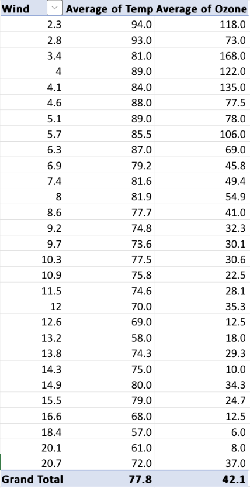
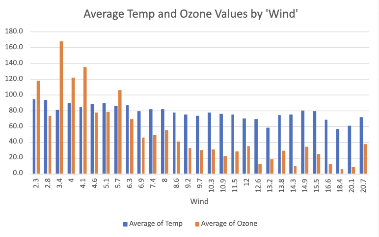
Newport Oregon Oceanographic Temperature Dataset
Starting off in the year 1996, a group of NOAA Fisheries and Oregon State University Scientists sampled the Newport Hydrographic Line fortnightly to understand changing ocean conditions. The various variable data was collected from a station located 5 miles off the coast of Newport, Oregon. The scientists sampled and collected data regarding seven different variables:
Day (Numerical) - The specific day of the month in which the data was sampled.
Month (Numerical) - The specific month of the year in which the data was sampled.
Year (Numerical) - The specific year in which the data was sampled.
Temperature (Numerical) - Oceanographic, temperature data collected from a 50 m water depth.
Oxygen (Numerical) - Oceanographic, oxygen data collected from a 50 m water depth.
Northern Copepod Biomass (Numerical) - Copepod community data collected from from vertical net samples on the northern area
Southern Copepod Biomass (Numerical) - Copepod community data collected from from vertical net samples on the southern area
Visualizations
The descriptive statistics of all the water temperatures sampled throughout the 28 years. The average temperature of all collective 28 years is 8.75 ºC. The lowest temperature recorded of all 28 years is 6.92 ºC and the highest temperature recorded from all 28 years is 14.65 ºC.
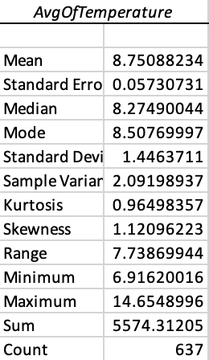
The peak temperatures of the water during the winter have a higher average than the peak temperatures of the water during the summer.
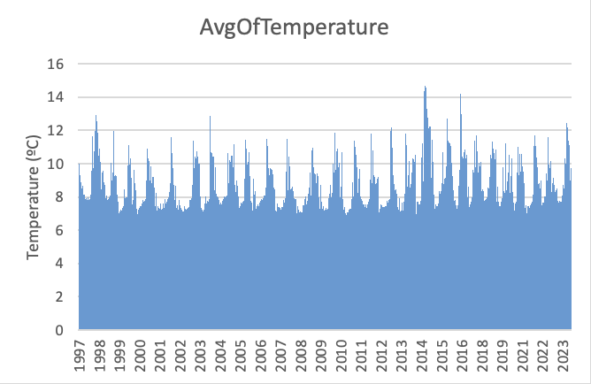
Through the dot plot, the average of the temperatures is 8.75 ºC as most of the dot population is visible there.
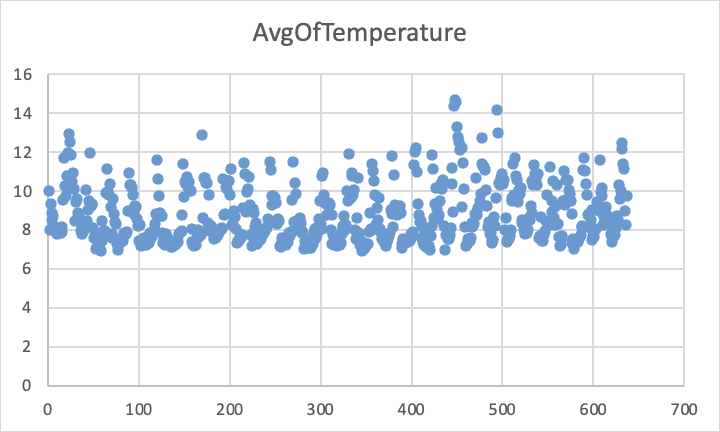
The average temperatures of all collective 28 years gathered within each month. During the summer months, the averages are lower. During the winter months, the averages are higher.
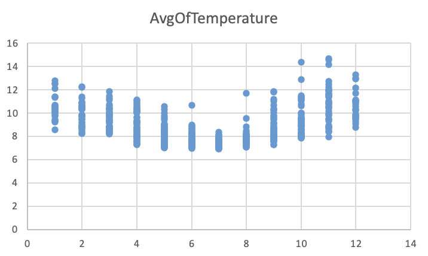